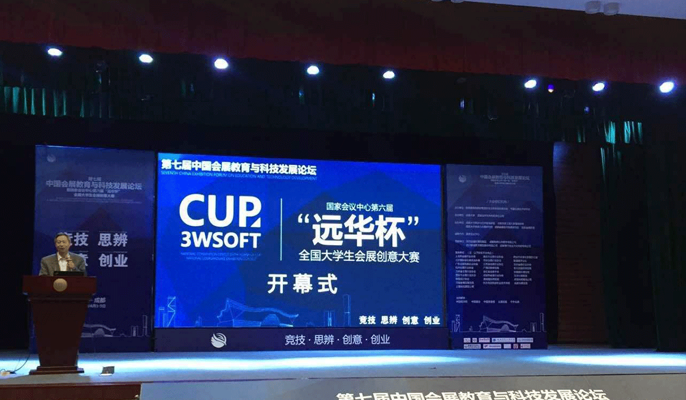
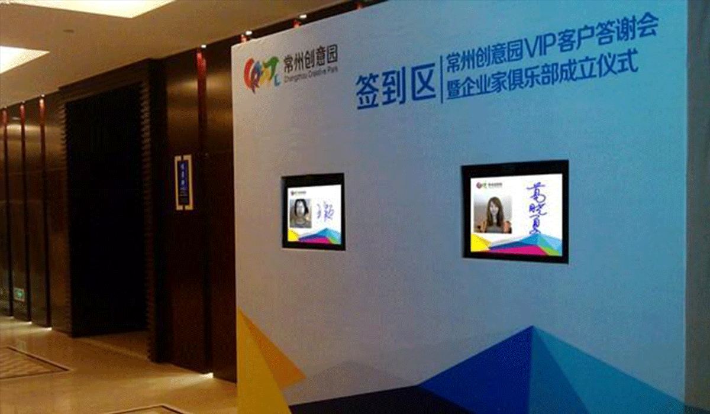
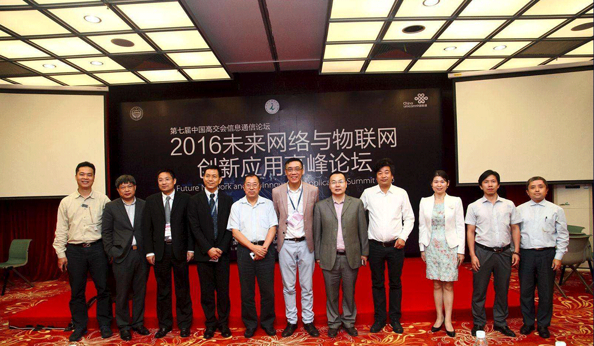

首页>亮点活动>科普产业发展论坛
- 首页
-
亮点活动
全部活动
- 科普产业发展论坛
- 科普产业发展论坛
- 科普产业发展论坛
- 科普产业发展论坛
- 科普产业发展论坛
- 科普产业发展论坛
- 科普产业发展论坛
科普产业发展论坛
人民网北京4月9日电（汪瑞华）第九届中国（××××）××（以下简介科博会）新闻发布会于今天上午在北京召开。记者从会上获悉，本届科博会将于5
月下旬在安徽芜湖举办。
人民网北京4月9日电（汪瑞华）第九届中国（××××）××（以下简介科博会）新闻发布会于今天上午在北京召开。记者从会上获悉，本届科博会将于5
月下旬在安徽芜湖举办。
据介绍，本届科博会以“创新驱动发展、科技引领未来”为主题，具体将由三项展览展示、三个专题论坛和六项专项活动三大板块构成,旨在促进科技创新与科学普及两翼齐飞、科普事业与科普产业创新发展，为提高全名科学素质提供有力支撑。
截至目前，参展单位已达375家，展示面积为3.3万平方米。主要包括国内著名高校和科研院所，知名科技、科普企业和有关全国学会等单位，同时还有来自美国、法国、德国、英国、加拿大、澳大利亚、芬兰、新加坡等11个国家和香港地区的企业、科技团体。
科普产品展示方面，本届科博会将展示我国最新的科普产品和技术，包括科技场馆展品展项，科普信息应用服务产品，科普教育类展品，科普出版类展品，科学艺术、玩具类展品，科普网站、科普游戏类展品，科普旅游类展品以及科幻类展品等8大态。
作为科博会的东道主，同时又是长三角城市群发展规划的II型大城市和G60科创走廊重要成员，芜湖市正大力培育机器人及智能装备、通用航空、新能源汽车等战略性新兴产业。从去年第八届开始，科博会增加了机器人展、机器人发展高峰论坛等活动，设置了战略性新兴产业展区。
芜湖市常务副市长曹哨兵介绍，科博会的举办，有力促进了科技创新和科学普及融合发展，也推动了芜湖乃至安徽战略性新兴产业发展，放大饿了产业集聚效应，统计显示，去年，芜湖市战略性新兴产业增加值占规模工业比重达29.8%，对规模以上工业增长贡献率达39.7%。